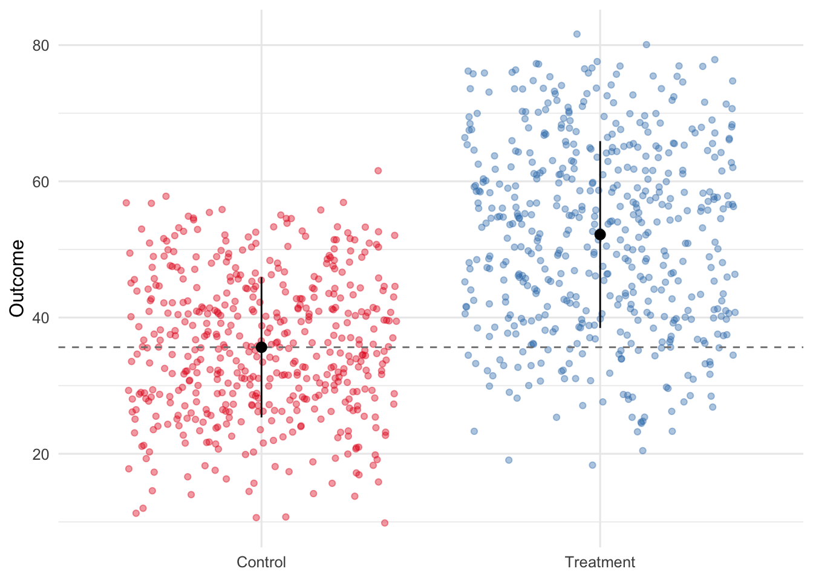
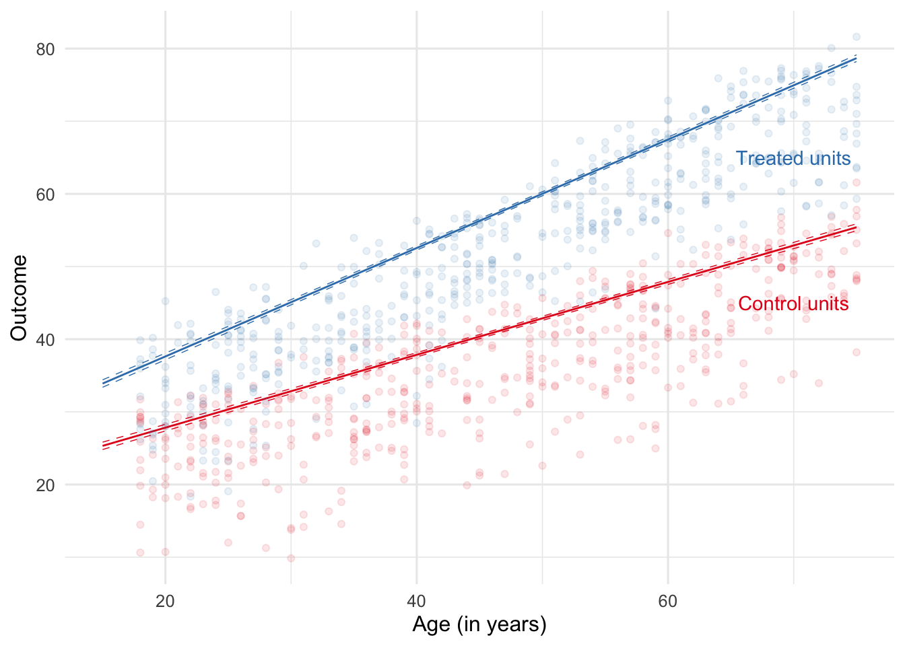

Packages used in this post
# Packages we'll be using today
library(tidyverse)
library(modelsummary)
library(marginaleffects)
library(kableExtra)
library(broom)
theme_set(theme_minimal(base_size = 12))Paw Hansen
May 24, 2023
In this series of blog posts, I go over some of the most common experimental designs, including natural experiments such as difference-in-difference, regression discontinuity designs, and so on.
The goal is to provide you with some sensible default plots and tables you can use when writing up your next experimental analysis. For more detail on the technicalities of the individual designs, check out the sources I link to at the bottom of this post.
Today: RCTs. What better way to kick off a series on experimental designs than with a truly randomized experiment? To get started, I’ll simulate some fake data we can work with. Table 1 shows a peak of the simulated data.
set.seed(2707)
num_people <- 1000
treat_effect <- 4.5
dat <-
tibble(
age = sample(18:75, num_people, replace = T),
female = sample(c(0, 1), num_people, replace = T),
non_western = sample(c(0, 1), num_people,
replace = T, prob = c(.85, .15)),
condition = sample(0:1, size = num_people,
replace = TRUE),
mu = 10 + .5 * age + 8 * female - 10 * non_western +
treat_effect * condition + .25 * (age*condition),
outcome = rnorm(num_people, mu, 2.5)
) |>
select(-mu)
# Recode into factors
dat <-
dat |>
mutate(condition = ifelse(condition == 1, "Treatment", "Control")) |>
mutate(female = ifelse(female == 1, "Female", "Male")) |>
mutate(non_western = ifelse(non_western == 1, "Non-western", "Western"))
head(dat) |>
kbl(digits = 2)| age | female | non_western | condition | outcome |
|---|---|---|---|---|
| 47 | Female | Western | Control | 43.60 |
| 47 | Male | Western | Control | 32.64 |
| 44 | Female | Western | Treatment | 49.03 |
| 44 | Female | Western | Control | 40.30 |
| 63 | Male | Western | Control | 35.46 |
| 51 | Female | Western | Treatment | 60.32 |
First, let’s make a table to see if our two groups are balanced on average. See Table 2. This would be your typical “Table 1” if you were writing a research paper.
Control (N=485)
|
Treatment (N=515)
|
||||||
|---|---|---|---|---|---|---|---|
| Mean | Std. Dev. | Mean | Std. Dev. | Diff. in Means | Std. Error | ||
| Age | 46.6 | 16.7 | 47.1 | 16.6 | 0.6 | 1.1 | |
| N | Pct. | N | Pct. | ||||
| Female | Female | 237 | 48.9 | 248 | 48.2 | ||
| Male | 248 | 51.1 | 267 | 51.8 | |||
| Non-Western | Non-western | 72 | 14.8 | 83 | 16.1 | ||
| Western | 413 | 85.2 | 432 | 83.9 | |||
Alternatively, you could reserve that table for an appendix and instead present a table showing descriptives of the full sample. Table 3 shows an example.
| Mean | Std. Dev. | ||
|---|---|---|---|
| Age | 46.9 | 16.6 | |
| N | Pct. | ||
| Female | Female | 485 | 48.5 |
| Male | 515 | 51.5 | |
| Non-Western | Non-western | 155 | 15.5 |
| Western | 845 | 84.5 | |
| Condition | Control | 485 | 48.5 |
| Treatment | 515 | 51.5 |
After presenting evidence that your randomization was successful, you should move on to present your results. This could be either as a regression table (Table 4) or as a figure (Figure 1).
model_basic <-
lm(outcome ~ condition, data = dat)
model_cov_adj <-
lm(outcome ~ . + age*condition, data = dat)
modelsummary(models = list(
"Unadjusted" = model_basic,
"Covariate adjusted" = model_cov_adj),
coef_rename = c(
"age" = "Age (in years)",
"femaleMale" = "Sex: Male",
"conditionTreatment" = "Condition: Treatment",
"non_westernWestern" = "Origin: Western",
"age:conditionTreatment" = "Age x Treatment")
)| Unadjusted | Covariate adjusted | |
|---|---|---|
| (Intercept) | 35.641 | 8.141 |
| (0.553) | (0.394) | |
| Condition: Treatment | 16.548 | 4.899 |
| (0.770) | (0.479) | |
| Age (in years) | 0.501 | |
| (0.007) | ||
| Sex: Male | −7.975 | |
| (0.160) | ||
| Origin: Western | 9.660 | |
| (0.221) | ||
| Age x Treatment | 0.245 | |
| (0.010) | ||
| Num.Obs. | 1000 | 1000 |
| R2 | 0.316 | 0.971 |
| R2 Adj. | 0.315 | 0.971 |
| AIC | 7840.9 | 4697.8 |
| BIC | 7855.6 | 4732.1 |
| Log.Lik. | −3917.440 | −2341.879 |
| RMSE | 12.16 | 2.52 |
I personally prefer Figure 1 because in addition to showing the model (i.e. the two group averages), it also conveys information about the full distribution of data for both groups.
means <-
dat %>%
group_by(condition) %>%
summarise(avg = mean(outcome),
sd = sd(outcome))
avg_control <-
means %>%
filter(condition == "Control") %>%
select(avg)
dat %>%
ggplot(aes(condition, outcome)) +
geom_jitter(aes(color = condition), alpha = .4) +
geom_hline(yintercept = avg_control$avg, linetype = "dashed", color = "grey50") +
geom_pointrange(data = means, aes(x = condition,
y = avg,
ymin = avg + sd,
ymax = avg - sd)) +
labs(color = "Condition",
x = NULL,
y = "Outcome") +
scale_color_brewer(palette = "Set1") +
theme(legend.position = "none")
Finally, we might be interested in plotting some type of interaction with our treatment. The basic recipe is to define some values for each of the predictors and then use those to predict the outcome. We can use augment() from the broom package to do so.
With our predictions, we can make a basic graph.
preds |>
ggplot(aes(age, .fitted, color = condition)) +
geom_line() +
geom_line(aes(y = .lwr), lty = "dashed", linewidth = .25) +
geom_line(aes(y = .upr), lty = "dashed", linewidth = .25) +
scale_color_brewer(palette = "Set1") +
geom_point(data = dat, aes(age, outcome), alpha = .1) +
labs(x = "Age (in years)",
y = "Outcome") +
annotate(geom = "text", label = "Treated units", x = 70, y = 65, color = "#377eb8") +
annotate(geom = "text", label = "Control units", x = 70, y = 45, color = "#e41a1c") +
theme(legend.position = "none")
Notice how this graphs the predicted outcome across age but for Western females only. Alternatively, we could average over predictions from different subgroups to calculate the marginal effects. The marginaleffects package has a nice suite of functions to help us do just that.
RCTs are commonly used to test for causal relationships and knowing the basics in terms of presentation is therefore essential. In this post, I have shown how to use R to calculate and present some of the most common tables and figures used for RCTs. Now you’re ready to present your next RCT!
Coppock, A. (2021). Visualize as you randomize. Advances in experimental political science.
Healy, K. (2018). Data visualization: a practical introduction. Princeton University Press.